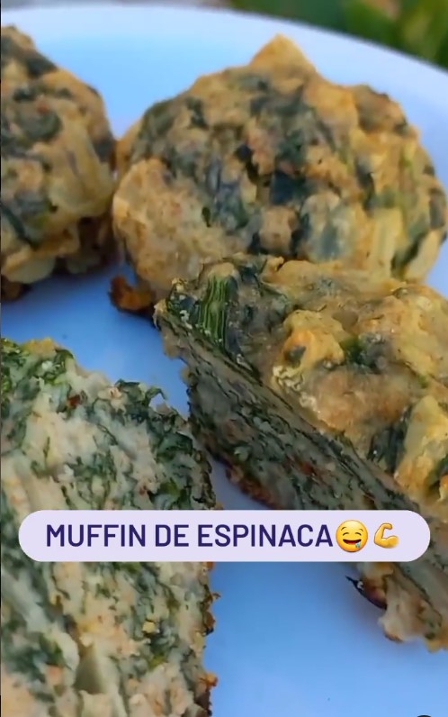
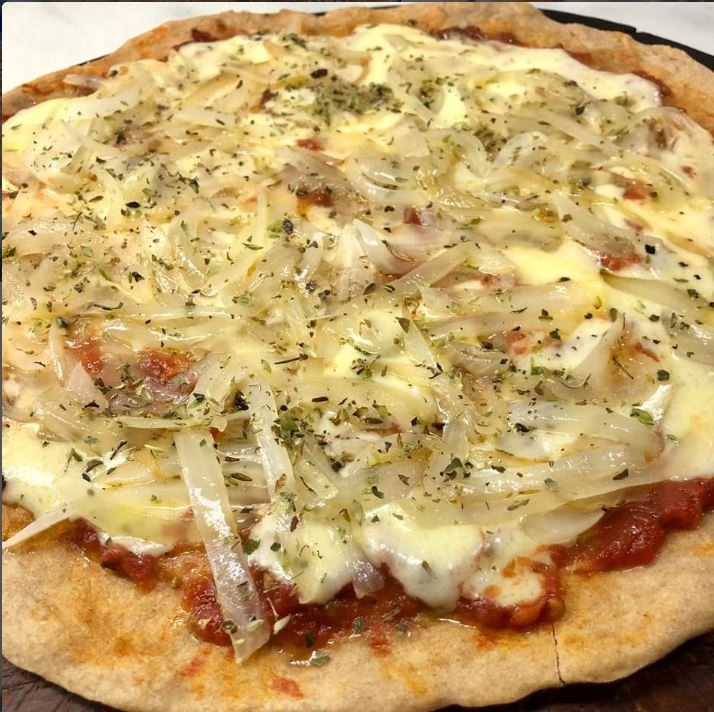

Recetas Saladas
TARTA DE ATÚN

🌸Ingredientes:
- 2 latas de atún al natural
- 1 huevo
- 1 zanahoria
- 1/2 morrón
- 1 cebolla grande
- 2 cdas de queso crema descremado
- 200gr de queso cremoso
- 2 Tapas de tarta
🌸Preparación:
Pelar y cortar la cebolla en cuadraditos, agregarle
la zanahoria rallada y el morrón cortado en cuadraditos.
Rehogar los ingredientes y agregar las latas de atún,
el huevo y el queso crema.
Mezclar todo bien .
Colocar el relleno en las tapas de tarta y agregarle
el queso cremoso. Tapar y hornear por 30 minutos
a fuego máximo.
Hasta que este doradita!!
Y listo!!
¿¿Que les pareció??
MUFFIN DE ESPINACA
🌸Ingredientes:
- 200 grs. de Harina leudante
- 2 Unidades de Huevo
- 4 Cucharadas de Aceite de Oliva Extra Virgen
- 100 grs. de XQueso de Rallar
- 100 cc. de Leche
- 50 grs. de Espinaca cortada en juliana
- 5 Unidades de Tomate cherry
- 1 Cucharadita de Pimentón
🌸Preparación:
En un bol mezclamos todos los ingredientes.
Volcamos la preparación en moldes de silicona aceitados
(o pirotines de papel). Los llenamos hasta 3/4
partes del molde. Colocamos sobre cada uno un tomate
cherry cortado al medio.
Colocamos los moldes en la Sartén, tapamos y cocinamos
a fuego mínimo hasta que estén cocidos.
Retiramos y dejamos enfriar. Espolvoreamos con pimentón.
Y listo!! ¿¿Que les pareció??
PIZZA DE HARINA INTEGRAL
🌸Ingredientes:
- 400gr de harina integral
- 300 ml de agua tibia
- 7 gr de levadura seca (la de sobre)
- 1 cdita de sal
- 1 cda de aceite (yo use de oliva,pero puede ser de maiz o girasol)
🌸Preparación:
Colocar la levadura en polvo en 100ml de agua tibia,
revolver y dejar reposar 10 minutos
En un recipiente colocar la harina integral junto con
la sal formando una corona, en el centro incorporarle
la levadura disuelta previamente , e ir mezclando
desde el centro hacia afuera.
Incorporar el resto del agua y el aceite y continuar
amasando.
Una vez formada la masa dejar reposar tapando el
recipiente en un lugar calido por 45 minutos.
Una ves levada la masa , desgasificarla y separarla en
3 bollitos y volver a dejar reposar por 30 minutos.
Por ultimo estirar los bollitos en asaderas aptas para
horno y colocarles la cubierta que mas deseen!!! Yo
en mi caso le puse salsa de tomate , queso
muzzarella y cebolla salteadita!!!! Y al hornoo! Por 15
minutos aprox hasta que este la muzzarella
derretida y la masa crocante🤗🤗🤗💃💃 Estas
cantidades rinden para 3 para pizzas grandes🍕🍕